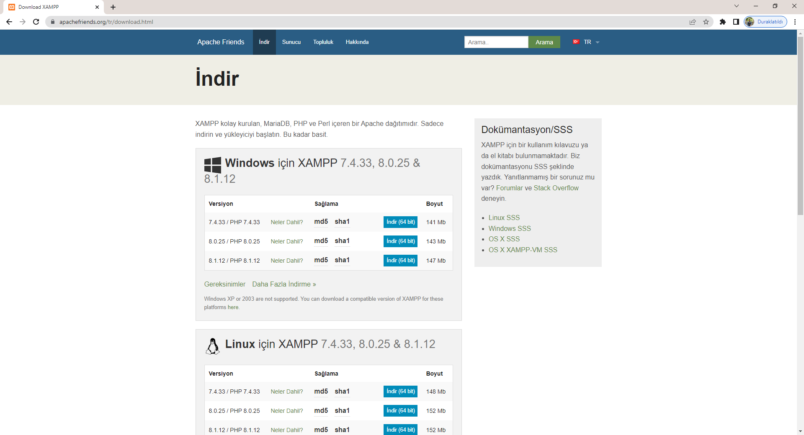
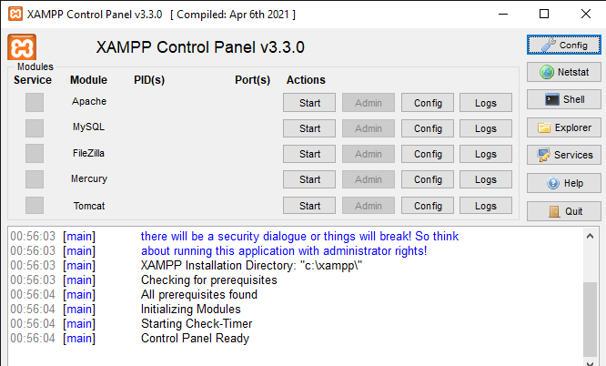
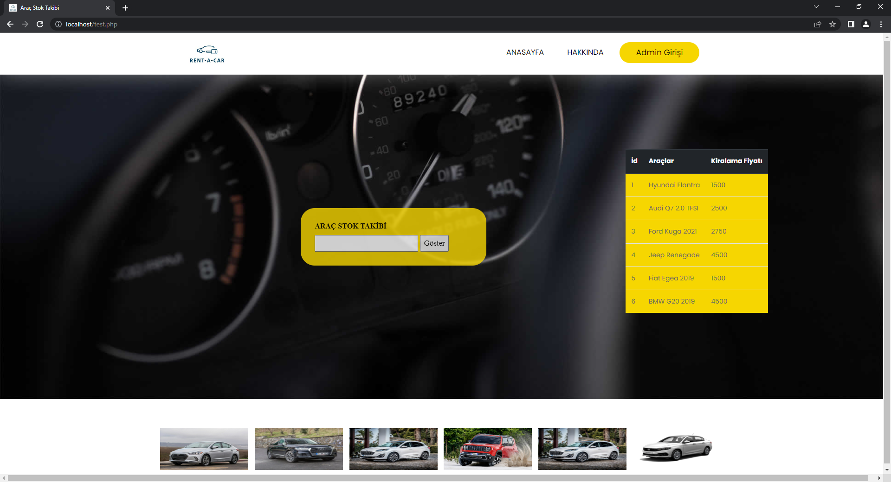
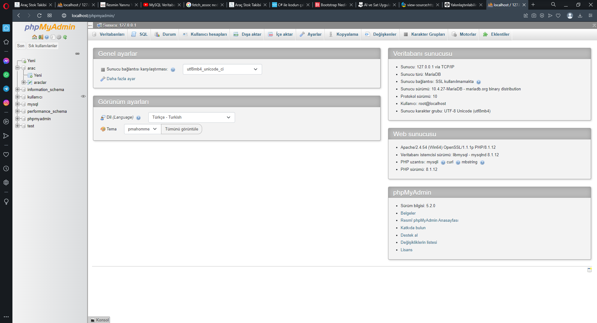
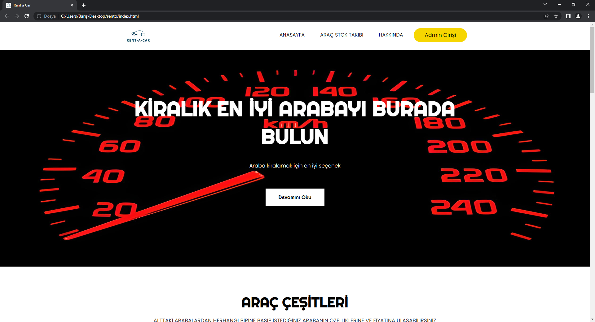
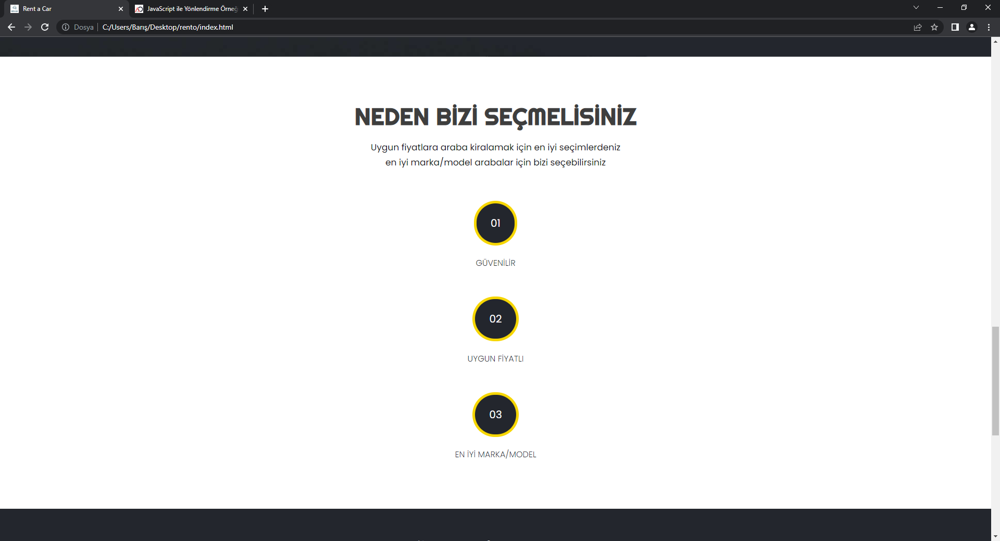

Herkese merhaba bu projemde sizlere Rent a Car Sitesini nasıl yaptım ,arka planında hangi kodlar mevcut bunlardan bahsedicem.
Rent a Car projemin kodlarına ulaşmak isterseniniz : GitHub
XAMPP PROGRAMINI İNDİRME VE MYSQL
Öncelikle PHP kodunun ve phpMYAdmin veri tabanının çalışması için XAMPP uygulamasını indirmemiz gerekiyor.
Aşağıda ki adımları izlemenizi istiyorum. Buraya tıklayarak aşağıdaki işletim sistemlerinden size uyanı seçip indir sekmesine tıklayın.
 
XAMPP indirme konumu
XAMPP CONTROL PANEL
Gerekli indirme işlemini yaptıktan sonra setup dosyasını bilgisayarınıza kurun.
Şimdi PHP kodlarının aktif gelmesi için yapmamız gereken işlem XAMPP Control Panelinden ilk başta bulunan Apache modülünün yanındaki start butonuna basıp, aktif etmeniz gerekir.
Benim gibi MySQL veri tabanını kullanmak istiyor iseniz eğer Apache yanında bulunan MySQL modülününün yanınadki start butonuna ve admin butonuna basıp aktif etmeniz gerekir.
Tabiki bu kadar değil ,şimdi ise PHP kodlarının çalışması için ana(main) dosyanızı örneğin:"index.php" XAMPP uygulamasının içindeki htdocs klasörüne atmamız gerekiyor.(tabikide apache butonunu aktif ettikten sonra)
PHP VE MYSQL VERİ TABANI
PHP bir web programlama dili ve MySQL'de bir SQL veritabanıdır.
Ben projemde PHP ve MySQL veritabanını kullandım.Bildiğim kadarıyla PHP başka veri tabanları ile de kullanılabilmektedir.
PHP aynı HTML gibi sade metin dosyalarıdır.Tek farkı PHP kodlarını ve MySQL veri tabanını çalıştırmak için LocalHost işlemi yapmamız gereklidir.
Sizlere zaten yukarıda hangi programı kullandığım ve nasıl aktif edebileceğinizden kısaca bahsettim.
Örneğin bir PHP koduna bakalım
PHP kodunu kullanarak 'Hello World!' yazımı.
RESİMİN KODLARI
< ?php
echo 'Hello World!';
?>
PHP kodları bu iki etiketin arasına yazılır. '< ?php ?>'
Echo etiketi içine yazılan değer ekrana çıktı olarak döner.
PHPMySQL VERİ TABANI
PHPMySQL Veri tabanı kullanmak oldukça basittir.Öncelikle size veri tabanını nasıl kullanacağınızdan bahsedicem.
✔️Uygulamadan MySQL i aktif ettikten sonra localhost/phpmyadmin/ den veri tabanına giriş yapabilirsiniz.
✔️Veri tabanı oluşturmak için sol tarafta bulunan yeni adlı kısma basıp veri tabanı oluşturabilirsiniz.
✔️Yeni adlı kısma bastıktan sonra oluşturacağınız veri tabanının adını ve yanında bulunan dil seçeneklerini seçip oluştur a bastıktan sonra
veri tabanına veri türleri,sütun isimlerini ve verileri girmeniz gerekiyor.Buradan PHPMyadmin oluşturma gidip bakabilirsiniz.
PROJEDEKİ PHP KODLARI
Genel olarak PHP'nin nasıl çalıştığını anlattım.Şimdi ise projemde kullandığım PHP kodlarını anlatıcam.
if döngüsü ile $kayit diye oluşturduğum değişken -> işaret ile veri tabanına yönlendirip num_rows>0 dan büyük olanları döngüye soktum.
While döngüsü ile $satir diye oluşturduğum değişken ve $kayit diye oluşturduğum değişkeni fetch_assoc komutuyla veritabanına yönlendirdim.
Echokomutuyla veri tabanındaki oluşturduğum tablodaki gerekli verileri çektim.
num_rows:Bir sonuç kümesinden satırların sayısını gösterir.
fetch_assoc(): Sütun isimlerine indisli bir dizi döner.Yani bizi veri tabanına yönlendirir.
echo "Araç Numarası:" . $satir["Arac_id"]:Bu satırda ise echo komutuyla Araç numarası adlı sütunu $satir değişkenini kullanarak veri tabanından Arac_id kısmını gösterir.
PHP KULLANARAK VERİ TABANI ÇAĞIRMA
Bu bölümde size projemde PHP dilini kullanarak MySQL veri tabanını nasıl çağırdığımdan bahsedicem.
Bu işlemi yapmadan önce tabiki önce veri tabanını oluşturup içine de size uygun tabloyu oluşturmanız gerekiyor.Bu işlemi nasıl yaptığımı size anlattım.
Neyse şimdi kodlara geçicek olursak;
Error_reporting() ile ilk olarak php kodlarında hata ayıklama işlemini başlattım. Sunucumu ve veri tabanını belirlemek için $servername ve $dbname adında değişken oluşturup MySQLadmin de oluşturduğum "arac" isimli veri tabanını çağırdım.
$conn diye oluşturduğum değişkene new mysqli ile veri tabanı işlemlerini atadım.$new değişkenine isemysqsli_set_charset komutu ile $conn değişkenini utf8 olarak attım.
İf döngüsü ile $conn değişkeninde hata var mı yok mu diye sorguladım.
İf döngüsünün içine $_POST değişkenini kullanarak veri tabanından "Aracid" sütununu çektim. Devamında $bul değişkenine veri tabanındaki "araclar" tablosunda "Arac_id si $no olanları" çektirdim ve son olarak $kayit değişkeni ile veri tabanına ulaştım.
Yukarıda gördüğünüz projemdeki kısımda text kısmına 1'den 6'ya kadar sayı girip göster kısmına tıklarsanız veri tabanındaki "Arac_id si #no olanları" listeler.
error_reporting():Hata mesajı vermesini sağlayabilir veya hata mesajlarını göstermesini engeller.
new mysqli:Veri tabanınındaki değerleri projeye getirir.
SELECT * FROM araclar where Arac_id='$no 'Araclar tablosundaki verilerin hepsini seçip Arac_id si '$no' olanlara göre aratır.
BOOTSTRAP NEDİR?
Bootstrap tasarlanacak web sitelerinin tablet, telefon, bilgisayar gibi her türlü ekran çözünürlüğüne duyarlı olacak şekilde ayarlamaya yarayan açık kaynak kodlu bir framework olarak denilebilir.
Responsive ekrana duyarlı demektir. Yani bilgisayarda görünen görünümü elinizde tuttuğunuz telefonun eran boyutuna göre görünümü değiştirir.
BOOSTRAP'DA CONTAİNER SINIFI
Bootstrap içerisinde içerik kısımlarının bulunduğu ana div yapısını oluşturan bir sınıf oluşturulmuştur.Bu“container”sınıfıdır ve bu sınıf kullanılarak
ana div daha başarılı bir şekilde boyutlandırılır. Container sınıfı 2 çeşittir. 1.si sadece container; sayfanın ortasını alır 1170px genişliğindedir,
2.si container -fluid sayfanın tamamını genişlik olarak alır. Grid sistemi classları da bu container classları içerisinde kullanılarak tasarımlar
sorunsuz oluşturulmaktadır.Ekran çözünürlüklerine göre grid sınıflarını ve container boyutlarını gösteren görseli inceleyerek başlayalım.
Yukarıda gösterildiği gibi, responsive bir tasarım yapabilmek için her cihaz ölçüsüne uygun bir kod yazılması gerekmektedir.
Bu sayede tüm cihazlarda stabil çalışan bir tasarım elde edebiliriz. Bootstrap içerisinde verilen içerik alanı öncelikle satıra daha sonra da sütunlara ayrılarak gridler oluşturulmaktadır.
div tagına row class’ı vererek bir satır açarız ve artık bu satır içerisinde kolonlarımızı oluşturabiliriz.
Her satır 12 parçaya ayrılmıştır.Burada bize kullanıma sunulmuş olan sınıflar her 1 sutun boyutuyla kullanılabileceği gibi 2,3,4,5…12 li parça şeklinde de kullanılabilir.
.container ile responsive olarak yani tarayıcı genişliğine göre .container class' ı sayfamızın alacağı sabit genişliği belirler. Bunu hemen
örnek ile pekiştirmenizi istiyorum.
Burası HTML kısmıdır.
< !DOCTYPE html>
< div class="container">
< /div>
< /html>
Bu görsel ise tarayıcının küçük ekrandaki görünümüdür.Umarım farkı anlamışsınızdır.
Farkı açıklamak istiyorum ben yinede.Fark şu:Mavi şerit her iki boyutta da gördüğünüz gibi tam ortalanmış ve boyutu orantılı azalıp
artıyor.Dİğer sınıf yani .container-fluid ile tarayıcının genişliğini hesaba katmadan tam ekran genişliğinde bir sayfamız olur.İkisinin farkını
görmenizi istediğim için ekranda nasıl durduğunu yukarıdaki görsellerde görebilirsiniz.
BOOSTRAP-4 GRİD SİSTEMİ ÖZELLİKLERİ
Grid sistemin en büyük avantajı responsive bir yapıya sahip olmasıdır
yani tarayıcı genişliğine göre her bir kolonu yan yana ya da alt alta alabiliriz. @media query' ler ile tarayıcının o anki genişliğini alabiliyoruz ve aldığımız bu değerlere göre etiketlerini yani bootstrap açısından baktığımızda oluşturduğumuz her kolonu alt alta ya da yan yana alabiliriz.
Eğer ki satırda yer varsa yan yana eğer satırda yer kalmadıysa alt satıra alabiliyoruz ki; masaüstü bilgisayarda açılan bir sitenin görünümü yatayda yer kaplarken mobile bir cihazda açılan site tasarımındaki her kolonun
alt alta gelmesi daha bir görünüm sağlayacaktır.
Boostrap aşağıdaki media query değerlerini kullanmaktadır.
//Ekstra Büyük Cihazlarda (Büyük Masaüstü Bilgisayarlar, 1200px ve yukarısı)
@media (min-width: 1200px) { ... }
Yani tarayıcı genişliği;
--576px ve aşağısında mı (.xs)
--minimum 576px ve 768px aralığında mı (.sm)
--minimum 768px ve 992px aralığında mı (md)
--minimum 992px ve 1200px aralığında mı (lg)
--ya da 1200px ve üstünde mi (xl)
Ek bir bilgi vermek istiyorum size .xs sınıfı bootstrap 4 'de kullanılmamaktadır.
media query kullanarak sayısal değerlerle uğraşmak yerine bootstrap 4 ile belirlenen ve her bir sayısal değere karşılık gelen class isimlerini kullanmak çok daha kolaydır.
Bu class isimleri .xs (ekstra small), .sm (small), .md (medium), .lg (large) ve .xl (eksra large) sınıflarıdır.
VİSİBLE VE HİDDEN
Boostrap kullanırken display tanımları yapmakla da uğraşmıyoruz.Öğelerinizin her türlü tasarımda
görünüklük derecelerini sadece bir class ile yönetebiliyoruz. Aşağıda vereceğim tanımları visible ve hiddenolarak
ayırdım.Normal haliyle verilmiş bir visible tanımı öğeyi her türden cihazda görünür kılar.
Hidden ise onu gizler. Gelin şimdi detaylı şekilde öğrenelim.
visible-lg:Sadece large ekran genişliklerinde gözükür. visible-md: Sadece medium ekran genişliklerinde gözükür. visible-sm: Sadece small medium ekran genişliklerinde görünür. visible-xs: Sadece extra small ekran genişliklerinde görünür. hidden-lg: Sadece large ekran genişliklerinde gizlenir. hidden-md: Sadece medium ekran genişliklerinde gizlenir. hidden-sm: Sadece small ekran genişliklerinde gizlenir. hidden-xs: Sadece extra small ekran genişliklerinde gizlennir.
Tabi bu yapıları çoklu şekilde kullanabilirsiniz.Örneğin;
< div class="visible-lg hidden-md visible-sm hidden-xs">< /div>
Yukarıda ekran genişliği large ve small medium da gözüksün fakat medium ve extra small da gözükmesin dike
belirtmiş olduk.
BOOSTRAP-4 GRİD SİSTEMİ ÖRNEKLERİ
Şimdi ilk örneeğimizi sizlere açıklayacağım ve sonrasında da nasıl göründüğüne bakacağız.
Yan yana 4 farklı sütun oluşturacağız.Tarayıcı boyutu en büyükteyken yan yana olacak şekilde görünür.
Eğer tarayıcı boyutunu en küçük boyuta aldığımızda ise oluşturduğumuz 4 sütun altalta gelecek şekilde yeni görünüm elde ederiz.
Şimdi HTML ve CSS kodlarını size gösterdikten sonra alt kısımda ise nasıl göründüğünü gösteren fotoğrafı yerleştireceğim.
Burası HTML kısmıdır.
< div class="container">
< div class="row">
< div class="col-sm-3 bg-primary">.col-sm-3< /div>
< div class="col-sm-3 bg-danger">.col-sm-3< /div>
< div class="col-sm-3 bg-primary">.col-sm-3< /div>
< div class="col-sm-3 bg-danger">.col-sm-3< /div>
< /div>
< /div>
Bu kısım ise CSS kısmıdır.
.row{
height:50px;
}
Tarayıcı boyutu tam ekrandayken görünüm böyledir.
Bu görünüm ise tarayıcı boyutu en küçük boyuttayken elde ettiğimiz görüntüdür.Umarım anlatımım öğrenmenize yardımcı oluyordur.
Yukarıda verdiğim örnekteki 4 sütunun boyutları birbirine eşitti. Şimdi vereceğim örnekte 2 sütun olacak.
Fakat ikinci sütunumuz birinci sütunumuzdan büyük olacak.Tarayıcı boyutlarını değiştirdiğimizde nasıl bir görünüm oluşur??
Siz düşüne dururken ben alta HTML ve CSS kodlarını yazıp nasıl göründüklerini göstereceğim.Sonrasındabirlikte yorumlayalım.
Burası HTML kısmıdır.
< div class="container">
< div class="row">
< div class="col-md-3 bg-primary">.col-md-3< /div>
< div class="col-md-9 bg-danger">.col-md-3< /div>
< /div>
< /div>
Tarayıcı boyutu tam ekrandayken dediğim gibi ikinci sütun birinci sütundan daha büyük.Haydi şimdi tarayıcı boyutunu en küçük boyut
yaptığımızda nasıl bir şey ile karşılaşacağız.
Evvet umarım tahmin ettiğiniz görüntü bu görüntüdür.Sütun boyutları demek ki tarayıcı boyutunu en küçük yaptığımızda boyutlarını birbirine
eşit şekilde alt alta yerleştiriyor.
RENT A CAR PROJE VİDEOSU
PROJE ÖNİZLEME




İLETİŞİM
Yaptığım projeye daha detaylı bakmak ve benimle iletişime geçmek için aşağıdaki bağlantılardan tıklayarak ulaşabilirsin.


.png)

 Bu görsel tarayıcının boyutu tam ekrandadır.
Bu görsel tarayıcının boyutu tam ekrandadır.
 Bu görsel ise tarayıcının küçük ekrandaki görünümüdür.Umarım farkı anlamışsınızdır.
Bu görsel ise tarayıcının küçük ekrandaki görünümüdür.Umarım farkı anlamışsınızdır.